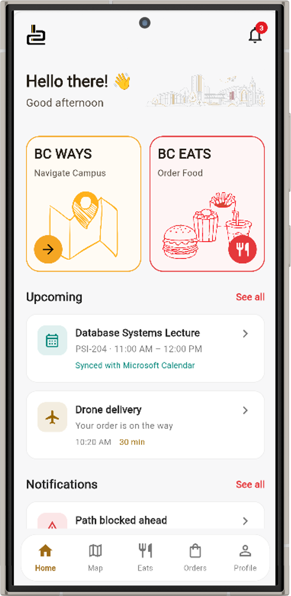
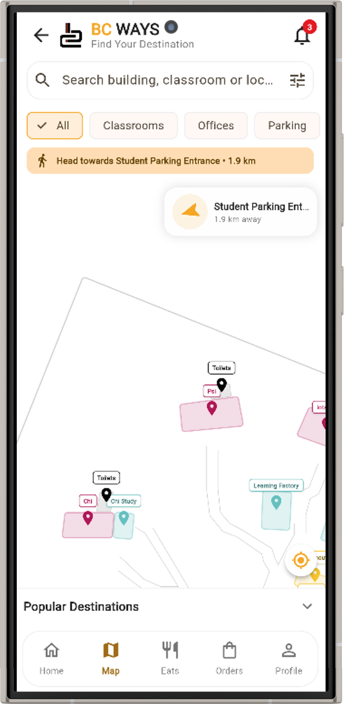

Home
One place for both services
The home screen has shortcuts to BC Ways and BC Eats, with upcoming items and notifications underneath.

BC Ways
Find your way around campus
Two screens from the navigation side of the app: finding a place, then choosing it as a destination.



BC Eats
Browse the tuckshop menu
BC Eats allows users to browse the campus tuckshop menu, view food options and prices, and place orders for pickup or delivery.